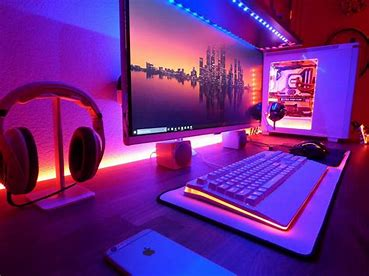

Sobre Me
Nascido em São Tomé e Príncipe, meu amor pela terra e cultura moldou minha jornada.
Descobri a programação back-end no ensino médio, encontrando nos códigos um quebra-cabeça fascinante.
Cada erro foi aprendizado, cada sucesso, uma conquista. A emoção de criar, de ver um projeto ganhar vida,
impulsiona minha paixão.
De origens modestas, mergulhei nesse universo, encontrando não apenas uma habilidade,
mas uma forma de expressão que transcende fronteiras.
Cada linha de código é uma história de dedicação
e perseverança.

Projetos
Projeto 1
Projeto 2